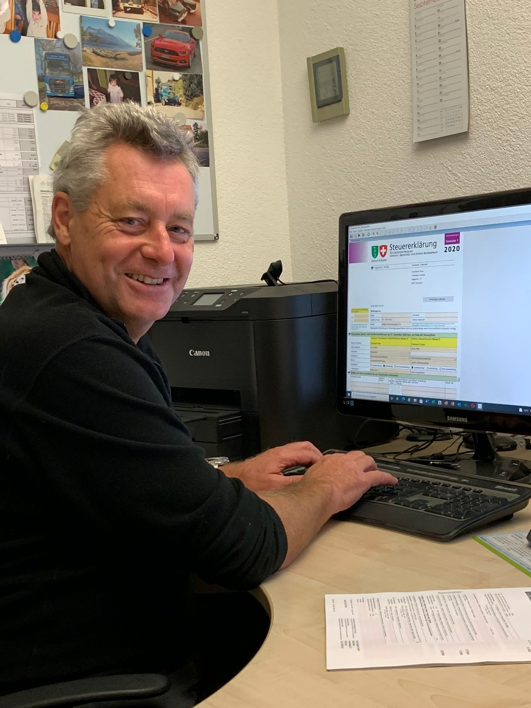

Wir sind ein kleines Treuhandbüro spezialisiert auf Steuererklärungen für Privatpersonen sowie Buchhaltung, Jahresabschlüsse und Mehrwertssteuer-Abrechnungen für kleine une mittlere Unternehmen. Gerne unterstützen wir Sie mit unserem langjährigen Know-how. Unser Service ist professionell, unkompliziert und schnell.
Wir erledigen Ihre Steuerklärung und erzielen das minimale Steuerergebnis - bereits ab CHF 100.-
Mehr erfahrenWir führen Ihre Buchhaltung oder kümmern uns um das Offert- und Rechnungswesen
Mehr erfahrenWir unterstützen bei der Erstellung von Montas-/Quartals- und Jahresabschlüssen sowie Mehrwertssteuerabrechnungen
Mehr erfahrenLernen Sie uns persönlich kennen - ein Erstgespräch ist für Sie kostenlos und unverbindlich!
